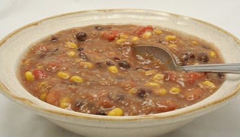

10 recetas de sopas fáciles para preparar en 30 minutos
- Sopa rápida | Recetas Gallina Blanca
- Receta de sopa calentita para hacer en menos de 30 minutos
- Sopa de fideos rápida | Demos la vuelta al día
- Sopa rápida de pollo, Receta Petitchef
- 15 recetas de sopas caseras FÁCILES y muy sanas .
- Sopa rápida - El Rincón de Afi
- 10 recetas de sopas fáciles para preparar en 30 minutos
- sopas faciles y rapidas - Cocina Delirante
- 10 recetas de sopas y cremas fáciles y súper saludables - Clara
- Sopa Rapida y Facil de Pollo y Vegetales | El Mejor Nido
El Español
Editar perfil Cerrar sesión Zona Ñ La Edición
Cocinillas
Conoce nuestras newslettersCuenta de usuario
Iniciar sesión / RegistroEditar perfil Cerrar sesión
Editar perfil Cerrar sesión Recetas Carne Pescado y marisco Postres Ensaladas Verduras Pasta y arroz Salsas Sopas y cremas Aprende a cocinar Actualidad gastronómica Restaurantes Vinos Opinión
Premium
Suscríbete Zona Ñ La Edición App iOS App androidServicios
El Tiempo Hemeroteca Temas Newsletters IdealistaEl León de El Español Publicaciones S.A.
Recetas Carne Pescado y marisco Postres Ensaladas Verduras Pasta y arroz Salsas Sopas y cremas Aprende a cocinar Actualidad gastronómica Restaurantes Vinos Opiniónrecetas-sopas
Sopas y cremas
10 recetas de sopas fáciles para preparar en 30 minutos
Os proponemos 10 recetas de sopas fáciles y ligeras que se pueden preparar en 30 minutos o menos. Disfrutarás del frío del invierno.
3 febrero, 2016 11:45 Mer BonillaCon las sopas pasa como con las ensaladas, que comer todos los días la misma es aburrido, así que hoy os propongo 10 recetas de sopas fáciles y ligeritas que se pueden preparar en menos de 30 minutos, tan ricas que vais a desear que haga frío para probarlas todas.
Ponemos a calentar 1 cucharada de aceite de oliva virgen extra en una cacerola y añadimos los ingredientes del SOFRITO. Salteamos durante unos minutos hasta que empiecen a tomar color. Añadimos las PROTEÍNAS, las ESPECIAS, el LÍQUIDO y las VERDURAS, llevamos a ebullición, bajamos el fuego, tapamos la olla y cocinamos durante unos 20 minutos hasta que esté todo tierno. Rectificamos de sal y pimienta, trituramos si queremos presentarla como crema. Servimos y añadimos el TOQUE FINAL.
Ponemos a calentar 1 cucharada de aceite de oliva virgen extra en una cacerola y añadimos los ingredientes del SOFRITO. Salteamos durante unos minutos hasta que empiecen a tomar color. Añadimos las PROTEÍNAS, las ESPECIAS, el LÍQUIDO y las VERDURAS, llevamos a ebullición, bajamos el fuego, tapamos la olla y cocinamos durante unos 20 minutos hasta que esté todo tierno. Rectificamos de sal y pimienta, trituramos si queremos presentarla como crema. Servimos y añadimos el TOQUE FINAL.En realidad, más que 10 recetas de sopas, son como 10 recetas en una, porque todas se preparan igual, pero lo que cambian son los ingredientes, así que hoy vamos a escribir el post al revés, vamos a empezar por la preparación y después pondremos los ingredientes de cada una de las diferentes sopas.
Recetas de sopas en menos de 30 minutos: La preparación
Sopa mexicana
Crema de alubias rojas
Sofrito : 1 cebolla en dados Proteínas : 2 botes de alubias rojas cocidas, enjuagadas y escurridas Especias : 1 cucharadita de comino Líquido : 6 tazas de caldo de pollo o verduras Verduras : 1 pimiento verde troceado Toque final : Hojas de cilantroEsta sopa de alubias es perfecta para presentarla como crema.
Sopa tailandesa de coco
Sofrito : 2 chalotas picadas Proteínas : 250 g de tofu duro Especias : 2 cucharadas de pasta de curry verde Líquido : 800 ml de leche de coco ligera Verduras : 1 pimiento rojo y 1/2 taza de brotes de soja Toque final : Hojas de cilantro, menta y zumo de limaCrema de boniato y cacahuete
Sofrito : 1 puerro en rodajas finas Proteínas : 1/4 taza de crema de cacahuete Especias : 2 dientes de ajo y una pizca de cayena Líquido : 6 tazas de caldo de verduras Verduras : 1 boniato grande Toque final : Perejil y cacahuetes tostados troceadosTriturar antes de añadir el toque final
Sopa de ternera con champiñones
Sofrito : 1 cebolla picada Proteínas : 150 g de carne picada de ternera Especias : 1/4 cucharadita de tomillo Líquido : 6 tazas de caldo de verduras Verduras : 450 g de champiñones laminados Toque final : Estragón, nata baja en grasasSopa toscana de alubias blancas
Sofrito : 1 cebolla picada y 2 dientes de ajo Proteínas : 2 botes de alubias blancas cocidas, enjuagadas y escurridas Especias : 1 cucharadita de romero Líquido : 6 tazas de caldo de verduras Verduras : 1 tomate pelado cortado en dados Toque final : Queso parmesano y chorrito de aceite de oliva virgen extraSopa de pollo y calabacín
Sofrito : 2 cebollas picadas Proteínas : 1 pechuga de pollo asado troceada Especias : 1 cucharadita de hierbas provenzales Líquido : 6 tazas de caldo de verduras Verduras : 1 taza de guisantes congelados, 1 taza de espinacas y 1 calabacín troceado Toque final : salsa PestoCrema de lentejas al curry
Sofrito : 1 cebolla picada Proteínas : 1 bote de lentejas cocidas, enjuagadas y escurridas Especias : 1 cucharada de curry en polvo Líquido : 6 tazas de caldo de verduras o de pollo Verduras : 2 tazas de berzas picadas Toque final : Cebolleta picada o cebollinoTriturar antes de añadir el toque final.
Sopa de pollo y pasta
Sofrito : 1 cebolla picada y 2 dientes de ajo Proteínas : 1 pechuga de pollo asado troceada Especias : 1/2 cucharadita de tomillo Líquido : 6 tazas de caldo de pollo Verduras : 2 zanahorias y 2 ramas de apio troceadas Toque final : Orzo o fideos cocidos (*)(*) Se pueden aprovechar los que nos hayan sobrado de una ensalada o se pueden cocer en la propia sopa añadiéndolos unos minutos antes de finalizar la cocción.
Sopa de albóndigas
Sofrito : 3 chalotas troceadas Proteínas : 8 albóndigas de carne picada Especias : ½ cucharadita de orégano y ½ cucharadita de albahaca seca Líquido : 6 tazas de caldo de pollo Verduras : 1 manojo de espárragos verdes frescos troceados Toque final : Pan tostado (para mojar)Estas 10 recetas de sopas fáciles estoy segura de que os van a servir como inspiración para preparar muchísimas más.
Fuente | Shape.com
Lo más leído
Los 12 peores aceites de oliva del supermercado, según la OCU: el más
Dime qué vacuna de la Covid-19 te han puesto y te diré cuánto dura tu
Avance en fotos del capítulo (bölum) 41 de Sen Cal Kapimi ( Love is in
Ábalos formará ahora a los mossos a los que Marlaska da el control del
Almeida se mofa del encuentro Sánchez-Biden callándose 29 eternos
Mientras dormías
Regístrate gratis y recibe cada mañana las noticias en tu correo
ApuntarmeLos vídeos más vistos
El supuesto autor de los disparos que le han costado la vida a
Andrea, la viuda de Younes, relata cómo perdió
La Policía Local de Mazarrón detiene a Carlos
Últimas Fotogalerías
Las imágenes de la tremenda tangana que se montó en el Turquía - Gales y que acabó con tres tarjetas
El mayor desastre de la historia de Sri Lanka: 1.500 contenedores de tóxicos se hunden en su costa
La caída de Mario Fernandes, en imágenes: así ha sido el golpe con el que ha acabado en el hospital
Más en Sopas y cremas
Sopa agripicante de primavera, una receta de inspiración china
Mazamorra cordobesa, receta andaluza que triunfa en verano e invierno
Crema de garbanzos con coles de Bruselas, receta de aprovechamiento
Sopa de ternera ligera, la auténtica receta vietnamita de Pho Bo
Portada
Siguiente
Batalla de comida: La paella, ¿con o sin marisco?
Anterior8 recetas de arroz que se pueden hacer con sobras
Siguiente contacto Publicidad Branded Eventos Quiénes somos Política de Privacidad Condiciones de Compra Contactar © 2021 El León de El Español Publicaciones S.A. Aviso Legal Política de cookies cerrar